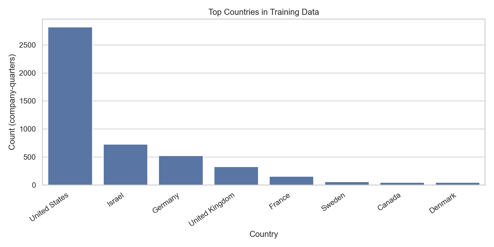
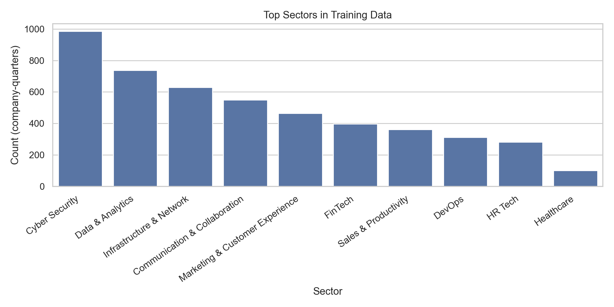
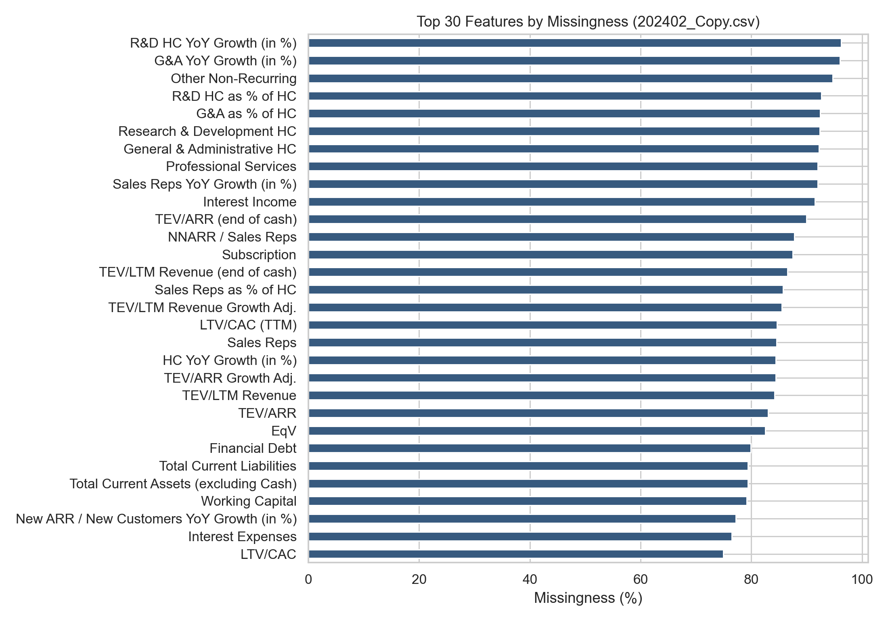
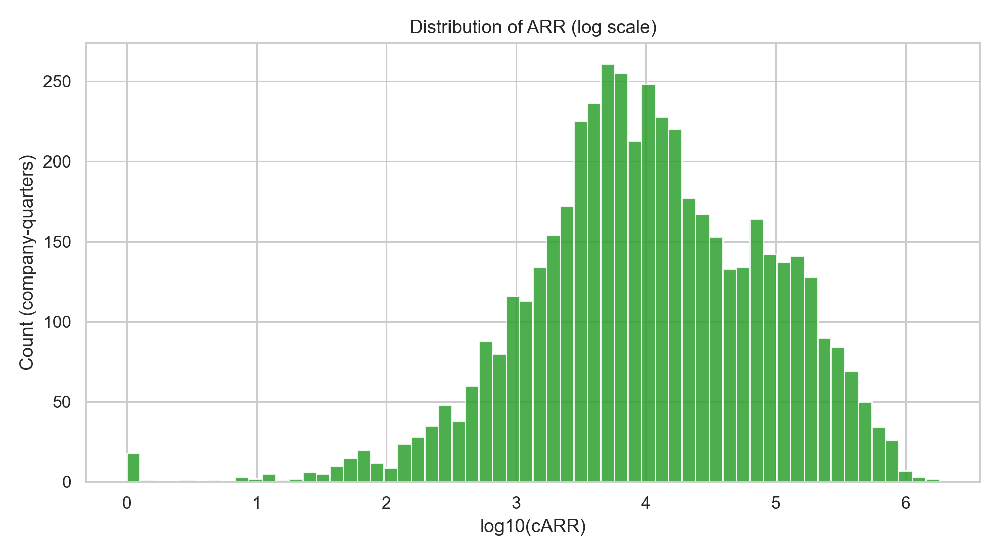
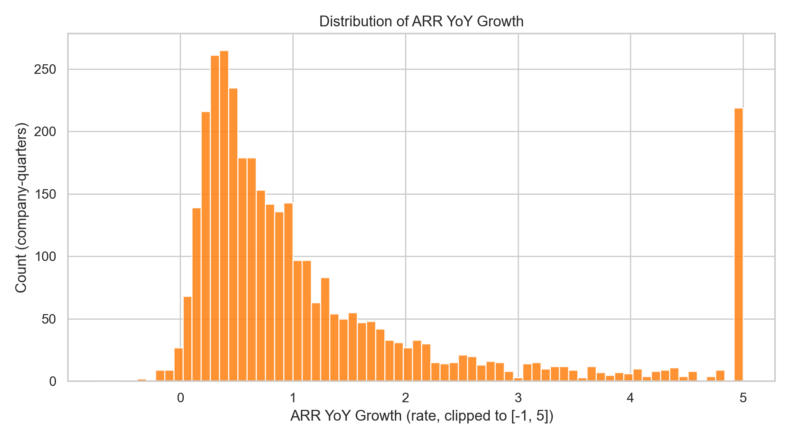
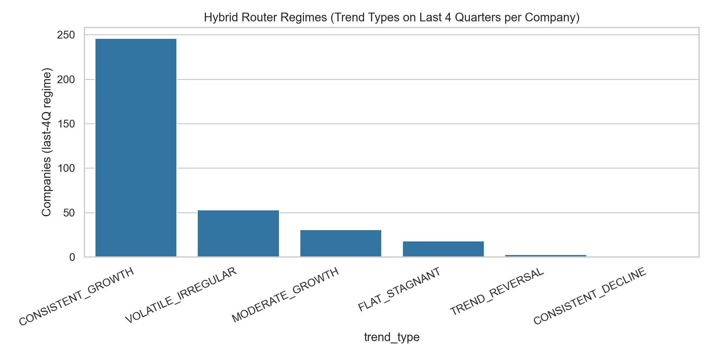
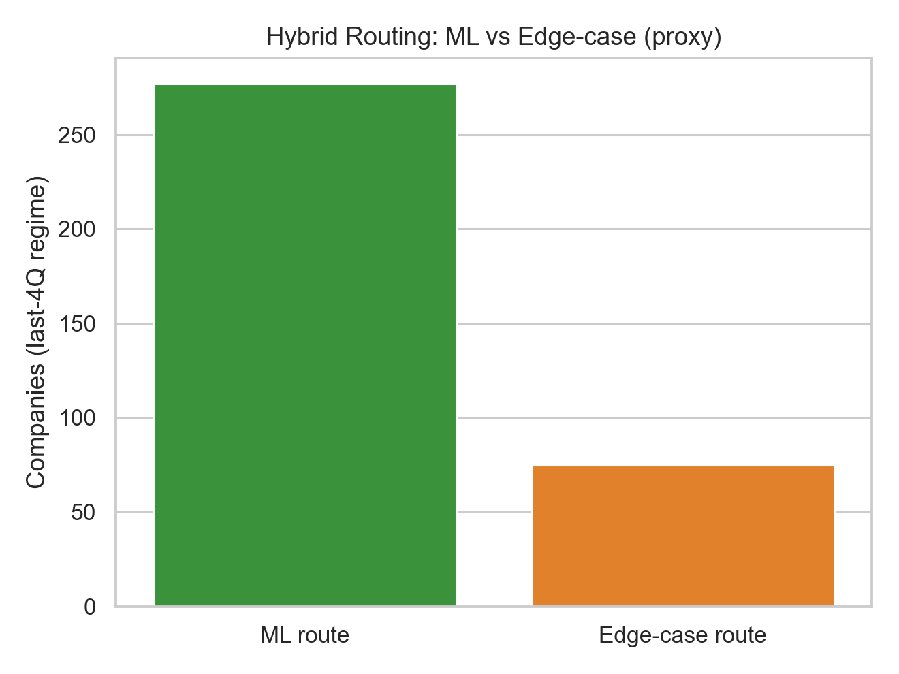
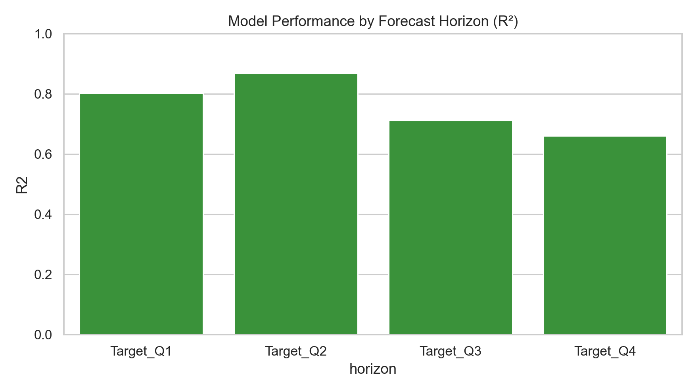
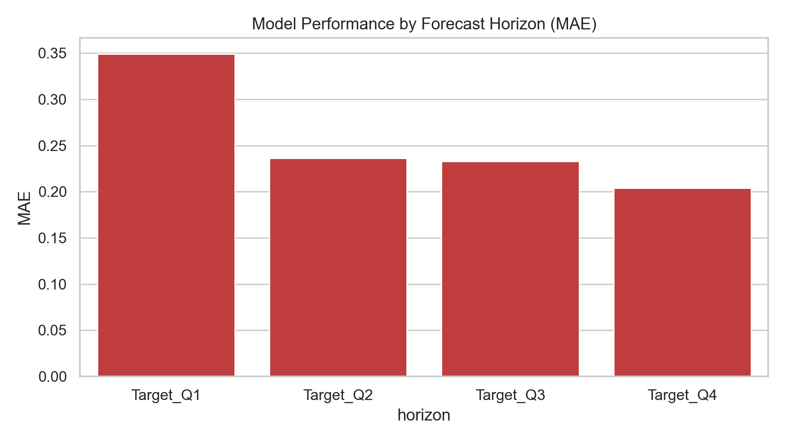
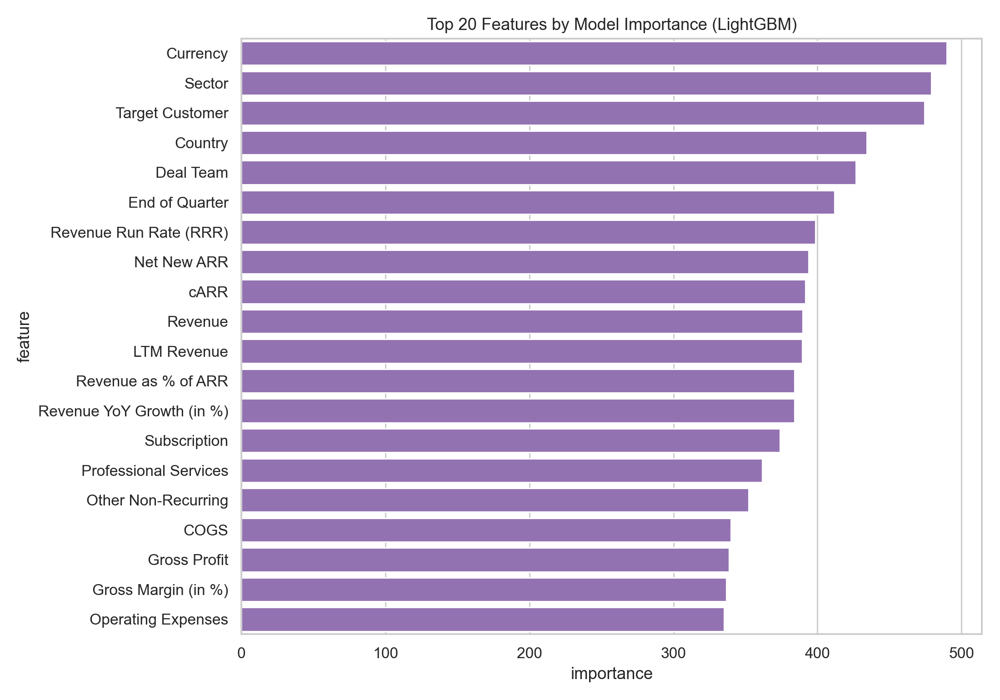

Technical Report (10–15 pages)
September 1, 2025
Venture capital (VC) investment decisions are made under extreme uncertainty. Early-stage companies often lack stable financial histories, and the available data is sparse, heterogeneous, and biased toward specific geographies and sectors. This project delivers a production-oriented forecasting system that predicts a startup’s next four quarters of ARR (Annual Recurring Revenue) using a LightGBM-based model, while explicitly addressing the core constraint of real-world usage: users cannot provide 100+ structured features at prediction time.
The shipped system consists of:
On a held-out test set, the LightGBM model achieves overall (R^2 ). Performance varies by horizon (e.g., (R^2 ) for the nearest quarter and (R^2 ) for the fourth quarter ahead), which is expected for multi-step forecasting in volatile startup environments. Predictions are returned with a pragmatic ±10% decision-support range to help VC users reason about risk and scenario bounds.
Given a company’s recent ARR trajectory (four quarters), headcount, and sector (plus optional Tier 2 metrics), forecast:
Internally, the core model predicts YoY ARR growth rates for each of the next four quarters and converts those into absolute ARR by applying predicted YoY growth to last year’s corresponding quarter.
The training dataset contains many features per company-quarter, but a real VC workflow cannot assume that an investor (or founder) will provide that full feature set. The central engineering requirement is therefore:
Enable high-quality predictions from minimal inputs without producing feature vectors that are out-of-distribution relative to training data.
The production model uses 202402_Copy.csv:
This dataset is not iid: it contains repeated measures per company and reflects venture-backed dynamics (high growth, volatility, down periods, and reporting inconsistency).
The dataset is geographically concentrated (US and a small set of other ecosystems dominate). A representative snapshot is shown in the country distribution figure.

Sectors are also concentrated in software/tech verticals. The production API further constrains sectors to a consolidated list for validation and robustness.

Many features are sparse (often missing in 80–90%+ of rows). This strongly influences both model training and system design.

Key implication: naïve “fill missing with 0” at inference creates unrealistic inputs and causes distribution shift. This observation directly motivated Intelligent Feature Completion.
ARR and growth metrics are heavy-tailed, spanning orders of magnitude. This motivates:


The production API integrates a small number of “active” modules:
Core endpoints:
POST /tier_based_forecast: main forecast endpointPOST /predict_csv: batch forecasts from CSV uploadPOST /chat: conversational explanation + analysis toolsGET /makro-analysis: macro indicators (VIX/MOVE/BVP/GPRH)GET /health, GET /model_info: system diagnosticsTier 1 is designed for the minimum information that is typically obtainable during diligence:
Tier 2 allows a user to increase forecast fidelity where available:
This tiering prevents the system from failing when a metric is missing while still rewarding higher-quality inputs.
The LightGBM model expects a full engineered feature vector. If a user provides only Tier 1, most features would be missing at inference. Simple imputation (zeros/global means) produces vectors that are not representative of the training distribution, harming performance and trust.
The completion system finds a cohort of similar companies using:
It then selects the top 50 nearest companies as a peer set.
For each missing feature, values are inferred from the peer set using a weighted median (weights = similarity score). This improves robustness under heavy-tailed feature distributions typical in startup metrics.
If a feature is absent even in the peer set (or fails type conversions), the system falls back to size-dependent defaults (small/growth/large ARR regimes). This avoids pathologies such as negative headcount or implausible margins.
A pure ML system trained predominantly on growth regimes can produce unrealistic outputs for:
This is a classic distribution shift problem: the ML model has limited exposure to these regimes and is optimized for typical growth dynamics.
A dedicated routing layer analyzes the last four quarters using:
This generates a trend label (e.g., CONSISTENT_GROWTH, CONSISTENT_DECLINE, VOLATILE_IRREGULAR) and determines whether to route to the edge-case method.


When the router detects an edge case (or Tier 2 indicates poor fundamentals such as short runway), the system uses a deterministic, benchmark-driven method that:
This yields an explainable forecast suitable for investment committees and post-investment monitoring.
LightGBM is chosen due to:
Model performance by horizon:


The top importance features provide partial interpretability and sanity checks (e.g., ARR growth and efficiency metrics should matter in SaaS).

All forecasts return three scenarios:
This is implemented as a pragmatic scenario band, not a calibrated statistical prediction interval. The intent is to provide:
Future iterations should calibrate this band based on historical residual distributions (e.g., empirical 10th/90th percentile errors by ARR regime and horizon).
The system provides macro indicators via GET /makro-analysis:
These indicators are used as context, not as causal features in the core ARR model. The goal is to present the forecast alongside market regime information, improving interpretation and decision quality.
This project delivers a production-ready ARR forecasting system for venture capital workflows. The core contributions are:
The system demonstrates strong predictive performance ((R^2 )) while prioritizing robustness and interpretability—two requirements that determine whether ML forecasting tools are usable in real investment practice.
From the repo root:
python3 report/generate_figures.pyFigures are written to report/figures/.